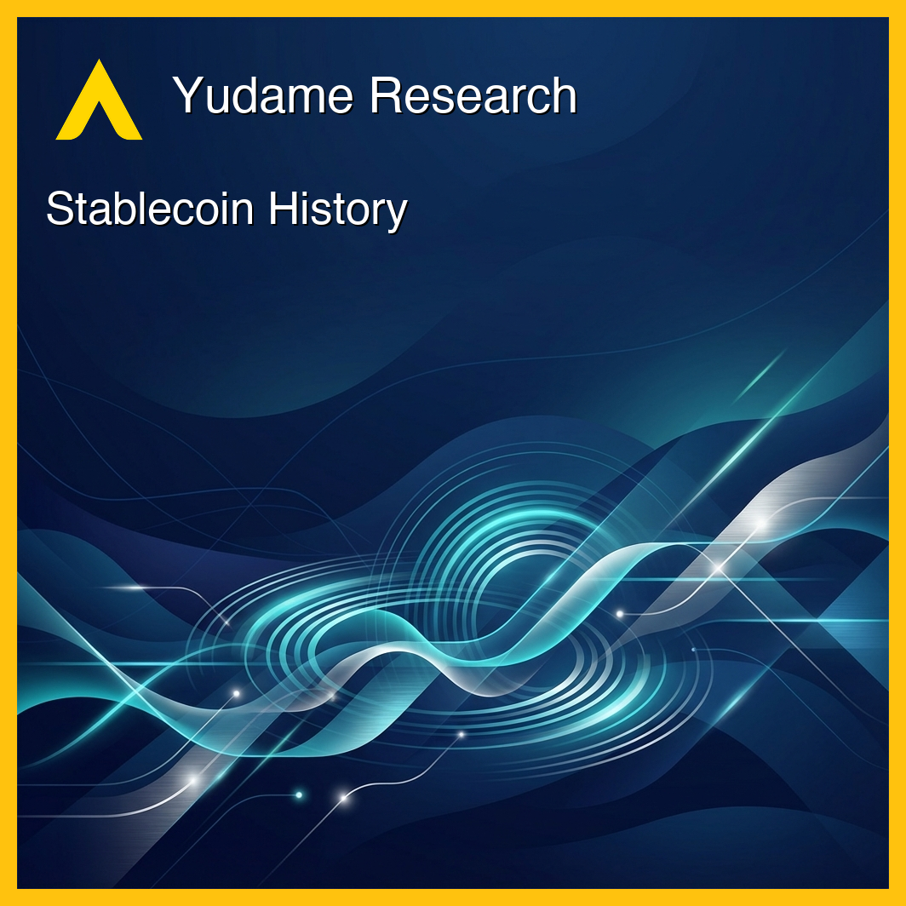
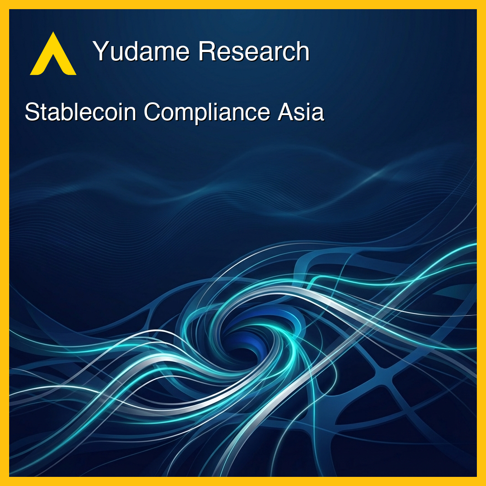
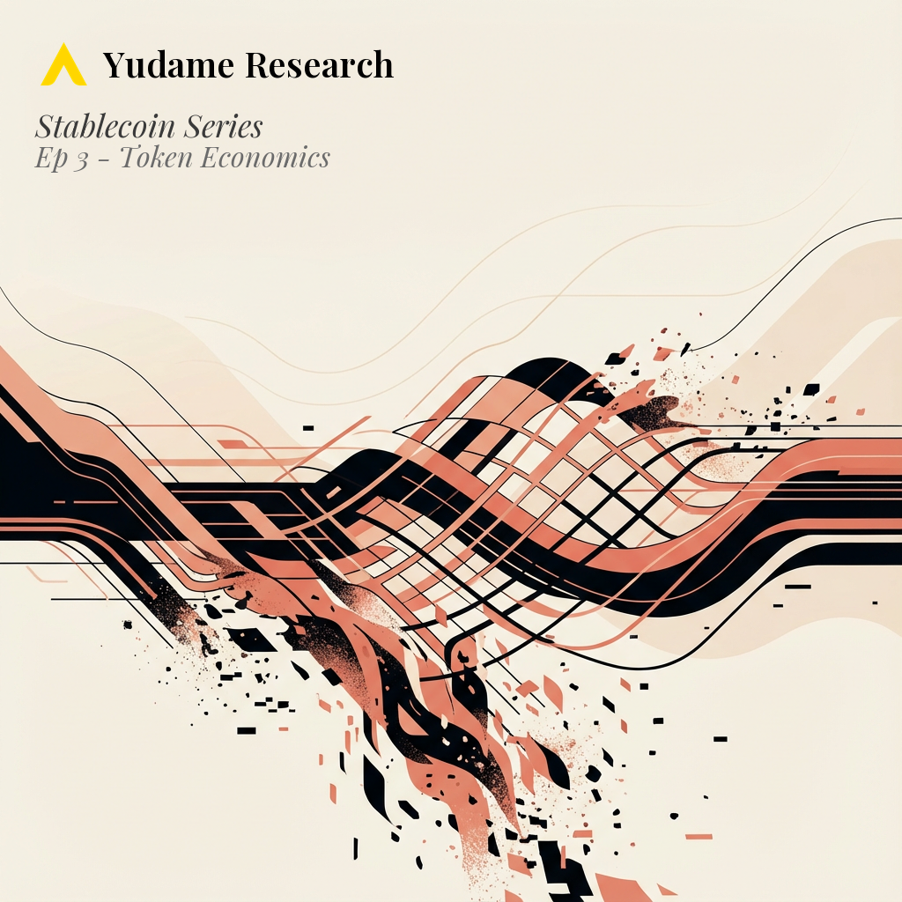
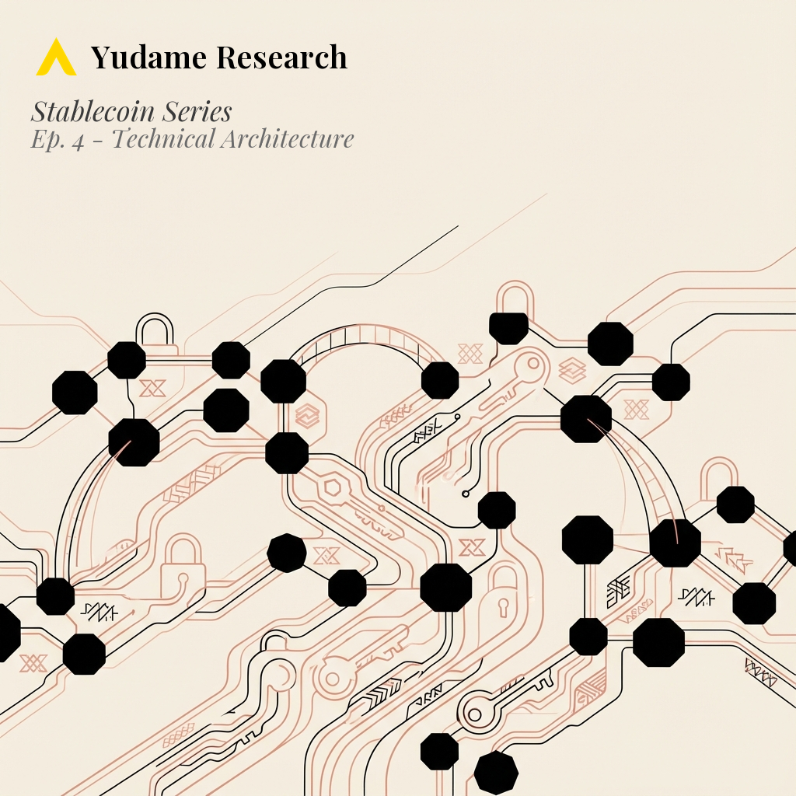
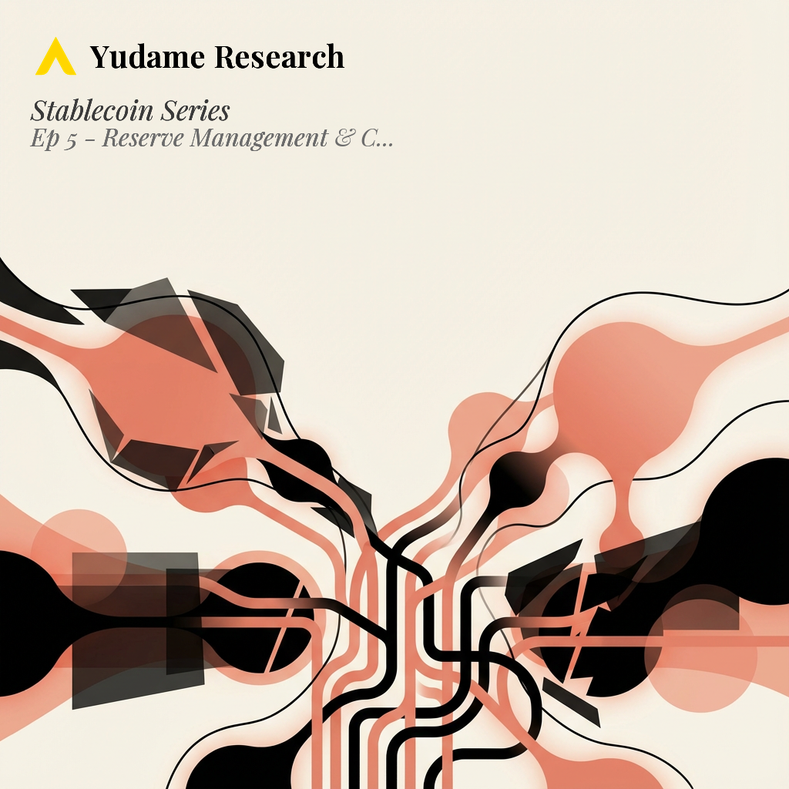
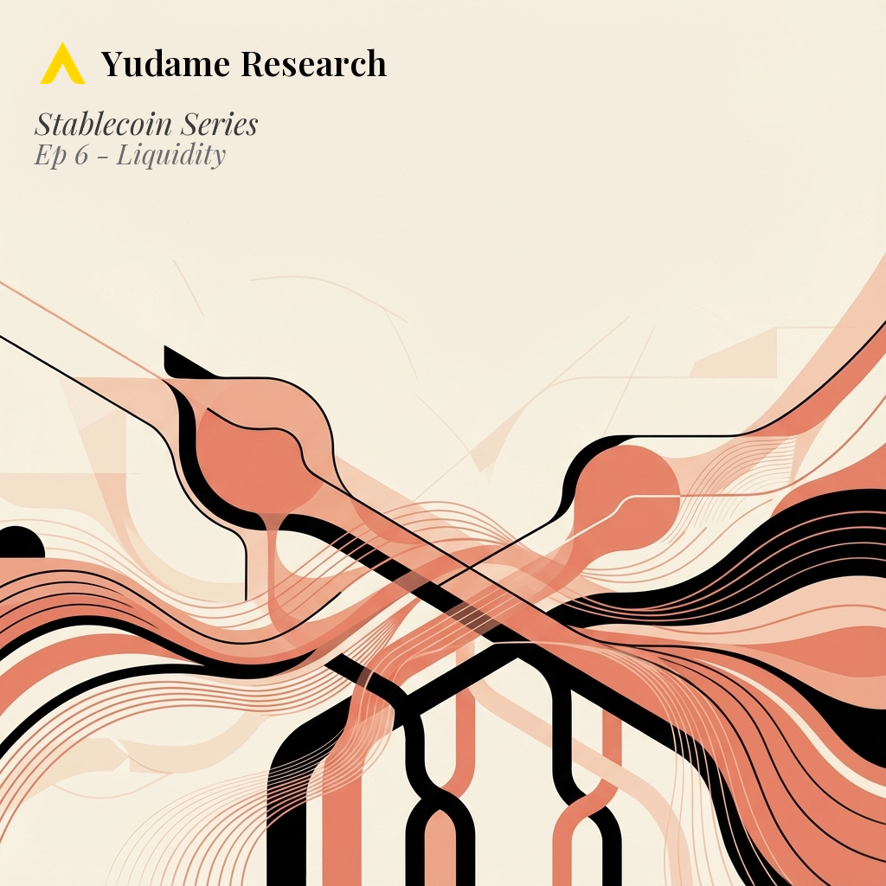
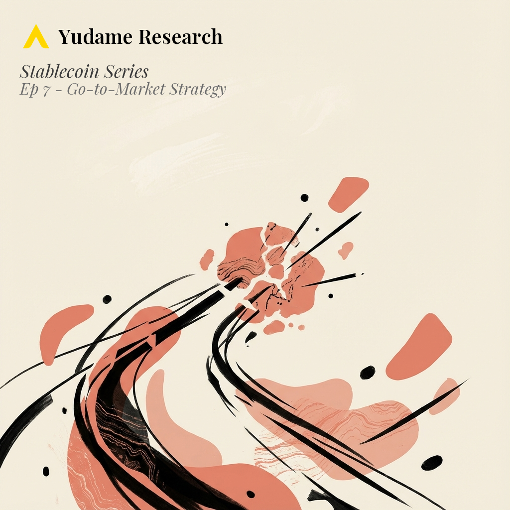

Stablecoin Series
Building and launching a stablecoin: from market context and regulation through technical development, reserve management, and operations.
Episodes

Eight years of stablecoin innovation and failure: from Tether's controversial rise to Terra/UST's collapse, and what it means for new entrants.
More
Market growth from $4B (2020) to $280B+ (2025). Tether's reserve scandals and regulatory fines. USDC's compliance-first strategy. Terra/UST's catastrophic collapse from $10B to zero. The 2022 crisis, SVB banking impact, and emergence of yield-bearing models.

GENIUS Act (US) and MiCA (EU) requirements: reserve mandates, attestations, custody rules, and what compliance actually costs.
More
GENIUS Act reserve requirements and monthly attestations. MiCA asset segregation and transaction caps. Jurisdictional triggers for US/EU compliance. Qualified custodian requirements. Cross-border challenges for Asian issuers. Enforcement examples from Tether delisting to NYDFS actions.

Collateralization models, stabilization mechanisms, and what Terra/UST reveals about algorithmic stability limits.
More
Terra's $45B collapse in 72 hours. The clear hierarchy of stability across collateralization models. How fewer than 10 traders control major stablecoin arbitrage. The death spiral mechanics of algorithmic stablecoins. Why algorithmic experimentation has destroyed over $60B in value.

Blockchain platform selection, smart contract security, and key management practices that meet ISO/IEC 27001 standards.
More
The $2.8B lesson from bridge exploits. Why audits show "little evidence" of reducing breaches. Cross-chain bridges hemorrhaged 40% of all Web3 theft. The blockchain trilemma's impact on stablecoin security. Access control flaws causing $953M in 2024 losses alone.

Qualified custody, attestation requirements, and how Circle handled $3.3B trapped in Silicon Valley Bank.
More
The disclosure paradox that triggered USDC's depeg. Why Circle's $0.34M equity nearly meant insolvency. GENIUS Act's 93-day Treasury rule. MiCA's 30% bank deposit mandate. Singapore's local nexus requirements. AICPA 2025 attestation standards. Tether's EU exit.

Market maker partnerships, exchange listing requirements, and overcoming incumbent network effects.
More
Tether allows 6 entities vs Circle's 521 monthly arbitrageurs—an 87-fold difference in access. Wintermute processes $2.24B daily across 50+ exchanges. DWF Labs handles $5B daily. The cold-start problem remains the primary barrier for new entrants. How liquidity infrastructure determines stablecoin success.

Use cases driving adoption, payment network integrations, and geographic markets showing fastest growth.
More
Meta sold Libra for $182M—a "political kill" by regulators. Now Visa settles on Solana, Stripe acquired Bridge for $1.1B. 71% of stablecoin volume is bots; only 7-10% organic. Mexico received $63.3B in stablecoin remittances. The shift from "who can mint tokens" to "who controls distribution and compliance."
Operational infrastructure at scale, crisis response, and long-term sustainability.
More
March 2023: USDC fell to $0.86 with $3.3B trapped in SVB. MakerDAO's 48-hour governance delay meant it couldn't act until the Fed intervened. GENIUS Act takes effect January 2027 with 93-day Treasury requirements. Travel Rule fragmentation across jurisdictions. What operational maturity actually means.